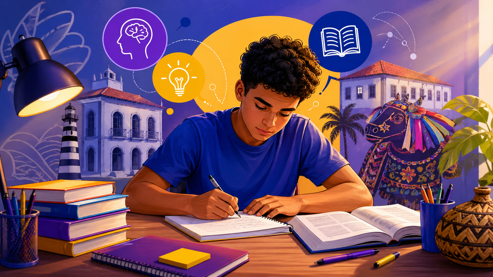

Possíveis temas para redação do PAES UEMA 2027
Dando continuidade ao seu material, agora vamos explorar os possíveis temas para redação do PAES UEMA 2027, com base no perfil da banca e nas obras literárias exigidas, como Infância, Crônicas de Lucy Teixeira e Meu livro de cordel.
Neste guia completo, você encontrará uma análise das tendências da banca, além de temas prováveis com explicações detalhadas e estratégias para construir uma redação nota alta.

Tendência da banca do PAES UEMA
A Universidade Estadual do Maranhão apresenta uma proposta de redação com forte caráter reflexivo, social e crítico. Diferente de outros vestibulares mais diretos, a UEMA costuma trabalhar com temas amplos, que exigem interpretação e repertório sociocultural.
Ao analisar provas anteriores e as obras obrigatórias, percebe-se que a banca valoriza:
- Discussões sobre justiça social e desigualdade
- Reflexões sobre identidade, memória e cultura
- Temas ligados ao cotidiano e à realidade brasileira
- Diálogo com a literatura e a formação crítica
Além disso, há forte tendência de conexão entre a redação e os temas presentes nas obras analisadas, o que reforça a importância de estudar conteúdos como Crônicas de Lucy Teixeira e sua crítica ao cotidiano urbano.
Possíveis temas para redação do PAES UEMA 2027
1. Valorização da cultura popular brasileira
Inspirado diretamente em obras como Meu livro de cordel, esse tema aborda a importância dos saberes populares na construção da identidade nacional.
- Preservação cultural
- Identidade regional
- Reconhecimento de tradições
2. Memória e construção da identidade social
Presente tanto na literatura quanto na realidade social, esse tema envolve a relação entre passado e presente na formação do indivíduo.
- Memória individual e coletiva
- História e pertencimento
- Formação cultural
3. Desigualdade social no Brasil contemporâneo
Um tema recorrente e sempre atual, que pode ser relacionado às experiências narradas em Infância, de Graciliano Ramos.
- Exclusão social
- Acesso a direitos básicos
- Impactos na formação do cidadão
4. O papel da literatura na transformação social
A literatura aparece como ferramenta de crítica e reflexão social, sendo um tema altamente provável.
- Consciência crítica
- Representação social
- Formação cidadã
5. Cotidiano e invisibilidade social
Inspirado em Crônicas de Lucy Teixeira, esse tema pode abordar a forma como grupos sociais são invisibilizados.
- Marginalização
- Desigualdade urbana
- Representatividade
6. Desafios da educação no Brasil
A educação é um tema clássico, mas pode aparecer com abordagem crítica e contextualizada.
- Acesso à educação
- Desigualdade educacional
- Educação como transformação social
7. Impactos da tecnologia nas relações humanas
Com a crescente digitalização, esse tema aparece com frequência em vestibulares.
- Redes sociais
- Alienação digital
- Construção de identidade online
8. Sustentabilidade e responsabilidade social
Questões ambientais podem surgir com enfoque social e regional.
- Preservação ambiental
- Consumo consciente
- Desenvolvimento sustentável
9. Violência e vulnerabilidade social
Um tema ligado à realidade brasileira e frequentemente debatido em contextos educacionais.
- Juventude em risco
- Desigualdade social
- Políticas públicas
10. Democracia e convivência social
Reflexões sobre respeito, cidadania e convivência em sociedade.
- Tolerância
- Participação social
- Direitos e deveres
Possível tese para redação
A compreensão dos problemas sociais contemporâneos, aliada à valorização da cultura e da literatura, é essencial para a formação de cidadãos críticos, capazes de propor soluções que promovam justiça social e inclusão.
Como se preparar para a redação
- Estudar as obras obrigatórias do PAES UEMA 2027
- Treinar redações com temas sociais e filosóficos
- Construir repertório sociocultural consistente
- Praticar propostas de intervenção
- Relacionar literatura com realidade social
Conclusão
Os possíveis temas para redação do PAES UEMA 2027 indicam uma prova que exige pensamento crítico, repertório e capacidade de argumentação. Ao estudar temas como cultura, desigualdade e identidade, o candidato estará mais preparado para desenvolver uma redação consistente.
- Foco em temas sociais e culturais
- Relação com obras literárias
- Exigência de análise crítica
Com uma preparação estratégica, é possível transformar esses temas em oportunidades para alcançar uma excelente nota.
Referências
- Análise da obra Infância – Graciliano Ramos
- Análise de Crônicas de Lucy Teixeira – Ceres Costa Fernandes
- Análise de Meu livro de cordel – Cora Coralina
Explore Outros Conteúdos
Continue seus estudos acessando outras seções do site Mestre Kira: